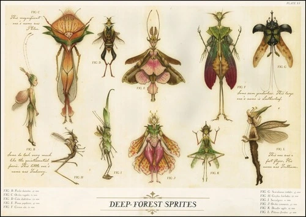
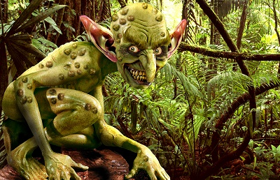

OVERVIEW
In mainstream media we see a lot of depictions of these little mythical creatures. Ones that stick are the Leprechaun franchise, the Goosebumps "Revenge of the Lawn Gnomes", and Tinkerbell. At facevalue, these depictions are just the sterotypes carried by the general knowledge of these mythological creatures. However, their roots are remnants of European folklore where these communities and cultures depicted these entities.
ORIGIN AND HISTORY
Goblins are mythical creatures that have been part of European folklore for centuries. They are often depicted as small, grotesque, and mischievous beings. The term "goblin" originates from the French word "gobelin," which is believed to have derived from the Germanic word "kobold.
Leprechauns are a type of fairy from Irish folklore, known for their love of mischief and their association with pots of gold. The name "leprechaun" comes from the Irish "leipreachán," which means "small person." Leprechauns are believed to be members of the Tuath Dé Danann, a mythical race of people who lived in Ireland before the arrival of the Celts.
Fairies are mythical beings that have been part of European folklore for centuries. They are often depicted as small, winged creatures with magical powers. Fairies are believed to inhabit the natural world, particularly forests and meadows.
CHARACTERISTICS
Goblins are typically associated with the underworld and are often seen as guardians of hidden treasures or as malevolent spirits that cause mischief and harm to humans.
Leprechauns are often depicted as small, bearded men who wear a coat and hat.
Fairies are also known for their love of music and dance, and they are often depicted as being both benevolent and mischievous. Other names used to reference them are "fae, good neighbor, hidden folk, or fair folk".
STORIES AND ANECDOTES
As someone who scrolls on tiktok for too long, I get on "WitchTok". From my understanding of their practice, fairies or "faes" will often try to give gifts, but you aren't suppose to say thank you because it is insulting to them to be thanked for who and what they are innately as they are. Additionally, it can be seen as a verbal acknowledgement that something has been done for you, putting you in debt to them, and they will collect.
IMAGES
| Fairy | Goblin |
|---|---|
|  |  |